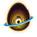
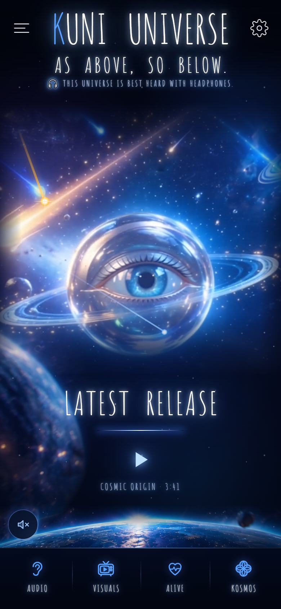
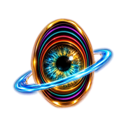

Vibe Coding Bootcamp · Finaler Check-in 3/3 · Kohorte 2 · Di, 3. November 2026
Meine Musik-App ohne Tracking, gebaut mit Claude Code und einem Team aus KI-Agenten
kuni universe ist meine eigene Musik-App: ein Künstler, ein Universum statt einer Streaming-Plattform mit hundert Namen, die keiner behält. Fans kommen per QR-Code ohne Anmeldung hinein, hören bewusst, entdecken Geheimnisse, ohne Werbung und ohne Tracking.
Ich bin Musiker und programmiere nicht. Im Bootcamp habe ich die App komplett mit Claude Code gebaut: vom Moodboard zur Next.js-App mit 3D-Neon-Zimmer, einer Sternkarte als Player und Songtexten im Takt (Whisper, lokal). Heute arbeitet ein kleines KI-Team für mich: ein Agent für den kostenlosen Mikrokosmos, einer für das spätere Abo, ein Prüfer vor jedem Zusammenführen.


Christopher Kunert („kuni“), Musiker und Künstler aus Halle (Saale). Programmiert nicht und baut trotzdem: mit KI als Werkzeug und Team.